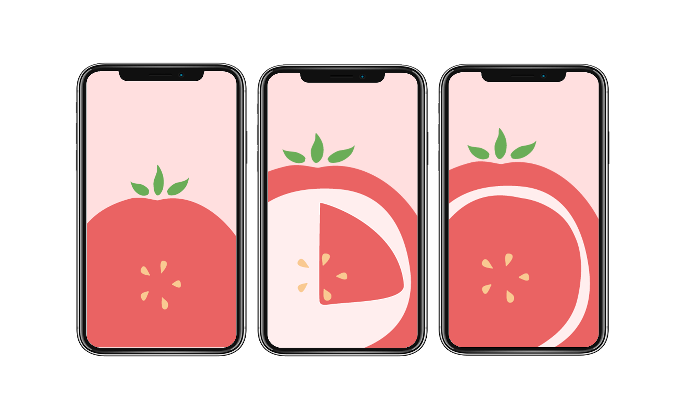
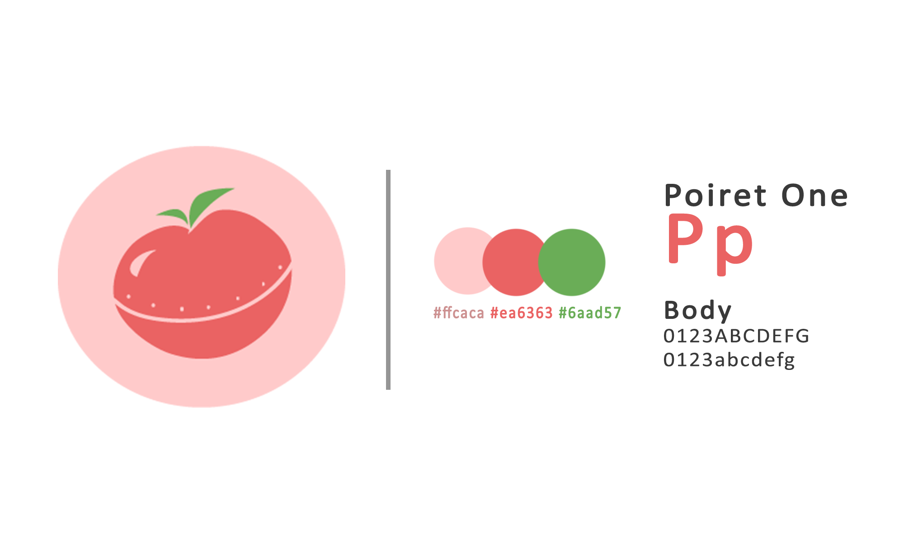

Pomato
A team project made for the UofTHacks 2019 hackathon. Pomato aims to be an addicting productivity app that provides users both a strict studying timer, and an enjoyable game during breaks.
See codeSkills
- Java
- C++
- Unity
- Adobe Illustrator
Process
As students who are easily distracted and struggle with time management, Pomato was built to not only help control how long users study for, but also how long they can be distracted for too. The concept was inspired by the well-known "Pomodoro Technique" which suggests immersing oneself on a specific task for 25 minutes, followed by a short break. After every 4 iterations, each break becomes increasingly longer to help the brain rest and process the new information.
The app itself is a combination of a countdown timer and an endless runner game. While the timer is running, users will be prompted to commence their study while in the app and warned with every attempted exit. After the countdown, it will automatically switch to the game mode, which tracks user progress with every break. In order to access the game, players must complete at least one round of pomodoro as added motivation.
